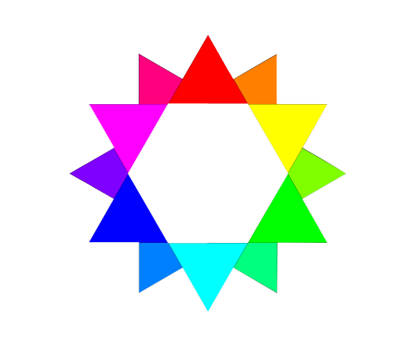

STRONA GŁÓWNA |
GRAFIKA RASTROWA |
GRAFIKA WEKTOROWA |
GRAFIKA TRÓJWYMIAROWA |
KOMPEDIUM |
|---|
Definicja grafiki rastrowej:
Grafika rastrowa, zwana również bitmapową, to typ grafiki, w której obraz jest prezentowany poprzez połączenie pojedynczych punktów (pikseli) na prostokątnej matrycy. Piksele są kolorowane na urządzeniu wyjściowym, a informacje są zapisywane w postaci systemów barwnych, takich jak RGB czy CMYK.
Definicja grafiki wektorowej:
Grafika wektorowa, zwana również obiektową, jest typem grafiki komputerowej, w której obraz jest zapisany w postaci elementów geometrycznych: figur (dla grafiki dwuwymiarowej) oraz brył (dla grafiki trójwymiarowej). Są one umiejscowione w matematycznym układzie współrzędnych.
Definicja palet barw RGB oraz CMYK:
Paleta RGB używana jest na monitorach urządzeń elektronicznych, ponieważ jeden piksel jest w stanie wyświetlić barwę powstałą właśnie poprzez nałożenie na sobie trzech podstawowych, natomiast CMYK używana jest przez urządzenia drukujące, które mieszają kolory tej palety i nanoszą na papier.
Definicja rozdzielczości:
Rozdzielczość to jeden z kluczowych parametrów decydujących o jakości obrazu na ekranie. Określa ona liczbę pikseli, z których składa się obraz. Im więcej pikseli, tym obraz jest ostrzejszy i bardziej szczegółowy.
